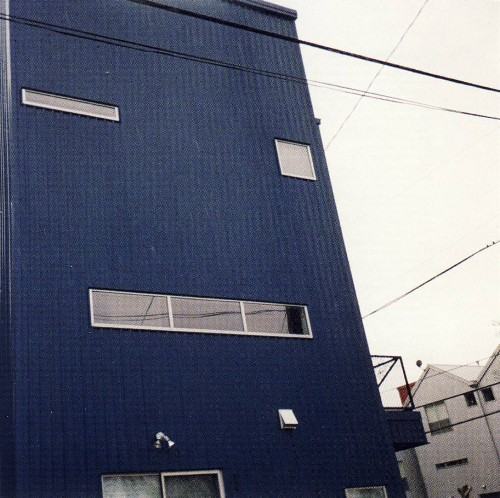

down in a mirror

title: down in a mirror: a second tribute to jandek
company: summersteps records
format: CD
- jeff tweedy - crack a smile
- live show rabbits - you painted your teeth
- eric gaffney - the dunes
- okkervil river - your other man
- brother jt - message to the clerk
- six organs of admittance - i'll sit alone and think alot about you
- home for the def - cave in you you / european jewel (incomplete)
- the marshmallow staircase - down in mirror
- the Mountain Goats white box
- george parsons - aimless breeze
- lewis & clarke - nancy sings
- jack norton - naked in the afternoon
- rivulets - sung
- kawabata makoto - babe i love you
- wayside drive - the spirit
- a real knife head - just die
- ross beach - van ness mission
- multi panel - i found the right change
- dan melchior - babe i love you
- pothole skinny - you painted your teeth
- dirty projectors - with u icon (an homage)
please mail any questions/comments/complaints, or just notes hello to:nall@themountaingoats.net